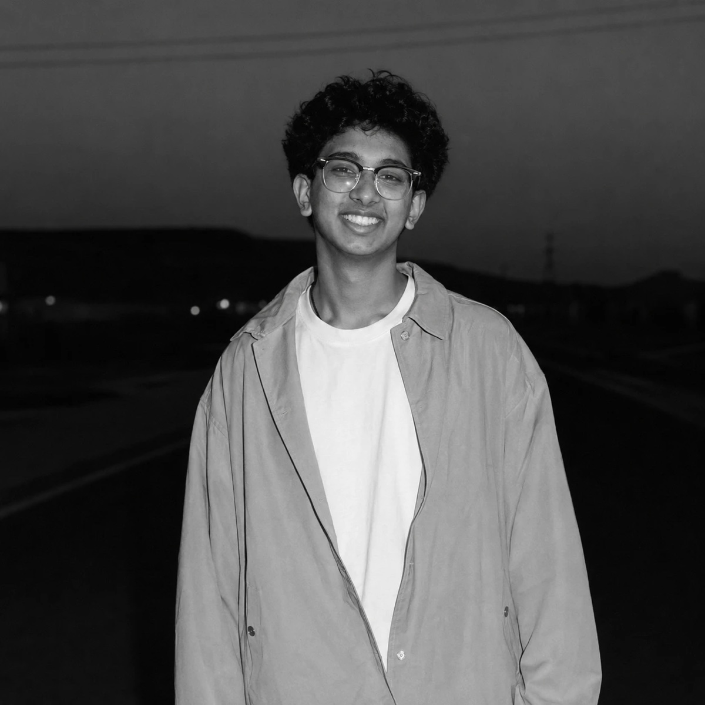

Hi, I'm Armaan. Nice to e-meet you.
At 14, I got six offers from YC-backed startups, two of which wanted to fly me out to San Francisco. Now I build robots that learn their own bodies, betting that structure beats scale: predictive self-models that learn from a handful of trials instead of mountains of data.